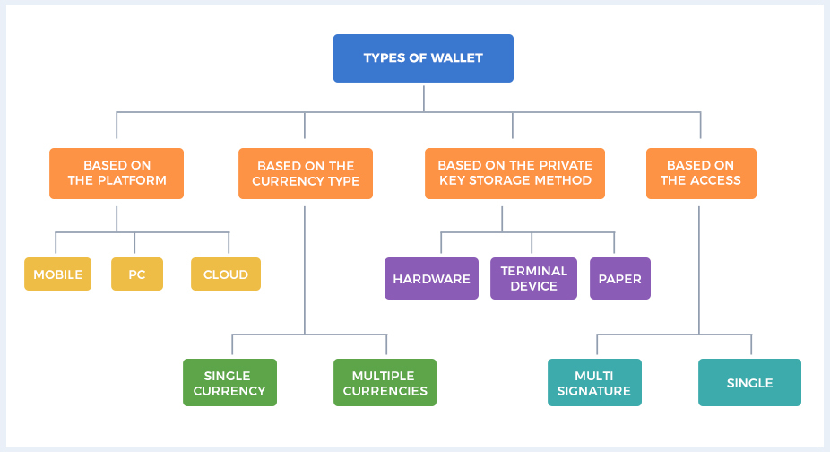
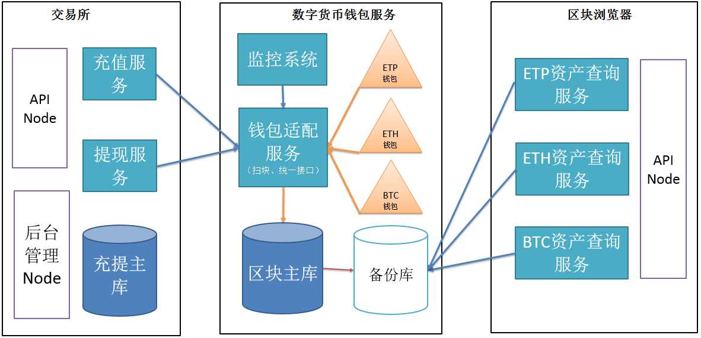

- 00 开篇词 帮你从0到1深入学习区块链技术.md.html
- 尾声篇 授人以鱼，不如授人以渔.md.html
- 新书首发《区块链第一课：深入浅出技术与应用》.md.html
- 第01讲 到底什么才是区块链？.md.html
- 第02讲 区块链到底是怎么运行的？.md.html
- 第03讲 浅说区块链共识机制.md.html
- 第04讲 区块链的应用类型.md.html
- 第05讲 如何理解数字货币？它与区块链又是什么样的关系？.md.html
- 第06讲 理解区块链之前，先上手体验一把数字货币.md.html
- 第07讲 区块链的常见误区.md.html
- 第08讲 最主流区块链项目有哪些？.md.html
- 第09讲 深入区块链技术（一）：技术基础.md.html
- 第10讲 深入区块链技术（二）：P2P网络.md.html
- 第11讲 深入区块链技术（三）：共识算法与分布式一致性算法.md.html
- 第12讲 深入区块链技术（四）：PoW共识.md.html
- 第13讲 深入区块链技术（五）：PoS共识机制.md.html
- 第14讲 深入区块链技术（六）：DPoS共识机制.md.html
- 第15讲 深入区块链技术（七）：哈希与加密算法.md.html
- 第16讲 深入区块链技术（八）： UTXO与普通账户模型.md.html
- 第17讲 去中心化与区块链交易性能.md.html
- 第18讲 智能合约与以太坊.md.html
- 第19讲 上手搭建一条自己的智能合约.md.html
- 第20讲 区块链项目详解：比特股BTS.md.html
- 第21讲 引人瞩目的区块链项目：EOS、IOTA、Cardano.md.html
- 第22讲 国内区块链项目技术一览.md.html
- 第23讲 联盟链和它的困境.md.html
- 第24讲 比特币专题（一）历史与货币.md.html
- 第25讲 比特币专题（二）：扩容之争、IFO与链上治理.md.html
- 第26讲 数字货币和数字资产.md.html
- 第27讲 弄懂数字货币交易平台（一）.md.html
- 第28讲 弄懂数字货币交易平台（二）.md.html
- 第29讲 互联网身份与区块链数字身份.md.html
- 第30讲 区块链即服务BaaS.md.html
- 第31讲 数字货币钱包服务.md.html
- 第32讲 区块链与供应链（一）.md.html
- 第33讲 区块链与供应链（二）.md.html
- 第34讲 从业区块链需要了解什么？.md.html
- 第35讲 搭建你的迷你区块链（设计篇 ）.md.html
- 第36讲 搭建你的迷你区块链（实践篇）.md.html
- 捐赠
第31讲 数字货币钱包服务
上一篇，我们谈到了“区块链即服务”的概念。实际上，区块链第一个需要解决的服务就是数字货币支付服务。如何将数字货币钱包集成到系统中，我认为这是区块链行业最为迫切的问题。
今天我们就来了解一下数字货币钱包，它面临了什么样的问题，这样的问题又需要什么技术才能解决，而数字货币平台想要定制自己的数字货币钱包服务，又应当如何集成。
数字货币钱包的分类
目前市面上的数字货币钱包有很多种，看起来似乎有些眼花缭乱，不过，我们可以将它们进行分类后，再快速了解。
下图展示了按照不同属性区分的区块链钱包。

左一是按照用户端平台划分的钱包，这种钱包实际是在服务端运行的，用户端的钱包实际上只是一个代理，所以用户不需要关心钱包的细节，使用起来十分方便，典型的例子是各种在线钱包。
左二是按照货币类型分类的钱包，主要是指这款钱包到底是否支持多币种，这里的多币种可以是基于以太坊ERC20 Token的同一个区块链上的多币种，也可以是集成了比特币和以太坊等不同区块链的多币种。
右二是按照私钥存储的方式来区分的钱包，实际上这里主要涉及了用户私钥是否被平台托管，如果不托管直接存储在用户端，也就是硬件、终端设备、纸质记录，这些都可以被称为On-chain的钱包；如果用户无法接触到私钥，私钥被托管在平台，那么这种钱包也被称为Off-chain的钱包。
右一是按照访问方式进行分类的钱包，例如可以多个人共同管理，同时它也是需要多重签名支持的钱包，否则就变成了个人私有的钱包。
以上的分类并不是绝对的，一个钱包可以兼具以上不同的属性，例如某个Mobile钱包是提供On-chain的，也提供多重签名、提供多币种的钱包，这种钱包通常就是业界比较流行的钱包类型。
但是，对于平台方来说，上述钱包类型可能不足以支持自己平台的需求，并发挥出最佳的功效。毕竟作为平台来说，对高可用、分叉检测、区块确认的要求是远远高于普通钱包的，这样的问题又是如何解决的呢？这就引入了一项新的技术。
扫描区块技术 Block scan
我们之前在深入区块链技术部分介绍过，构成区块链的四个核心技术是：P2P网络协议、分布式一致性算法、加密签名算法、账户与交易模型。这四个技术对应到数字货币钱包中就是，P2P网络、持久化存储、账户以及私钥管理、共识与交易验证四大模块。
其中，持久化存储模块是由全节点钱包自带的嵌入式数据库提供的，这里有LevelDB、BerkerlyDB、SQLite3等多种选择。
但是无论选择哪种嵌入式数据库，都面临了一个严峻问题，精细化的交易查询验证与性能不可兼具。换句话来说，任何全节点的嵌入式数据库都无法和服务器级别的数据库相媲美。
对于平台开发来说，显然选择服务器级别的数据库是更为合适的选择。那么这里就涉及了一个问题，如何把全节点钱包中的数据转换成为数据库服务器中的数据，这就需要用到一种扫描区块技术，简称扫块。
扫块，顾名思义，就是指扫描全节点钱包中的所有区块，然后将其解析后存储到数据库服务器的过程，这些数据库可以是MongoDB，也可以是MySQL，取决于你的业务需要。
我们可以举元界区块链扫块的例子，元界上的区块结构与比特币接近，你可以将其类比成比特币区块链。
以下是Python代码，展示了基于MySQL的关系型表结构，目的是从元界的嵌入式数据库中扫描区块，然后存储到MySQL中。
def init_table(conn):
tables = []
tb_block = '''
create table if not EXISTS block (
number bigint primary KEY ,
hash char(64) not null,
bits bigint,
transaction_count INTEGER ,
mixhash VARCHAR (128),
version char(8) ,
merkle_tree_hash char(64),
previous_block_hash CHAR (64),
nonce varchar(128) ,
time_stamp bigint
) DEFAULT charset=utf8;
'''
tb_tx = '''
create table if not EXISTS tx (
id bigint PRIMARY KEY ,
block_height bigint REFERENCES block(id),
hash char(64) not null
)DEFAULT charset=utf8 ;'''
tb_address = '''
create table if not EXISTS address(
id int PRIMARY KEY ,
address VARCHAR (64) UNIQUE
)DEFAULT charset=utf8;
'''
tb_output = '''
create table if not EXISTS tx_output(
id bigint PRIMARY key,
hash char(64) NOT NULL ,
tx_id bigint REFERENCES tx(id),
output_index bigint not null,
output_value bigint,
address_id bigint REFERENCES address(id),
script varchar(1024),
asset varchar(64),
decimal_number varchar(8)
)DEFAULT charset=ascii;
'''
tb_output_fork = '''
create table if not EXISTS tx_output_fork(
id bigint PRIMARY key,
hash char(64) NOT NULL ,
tx_id bigint,
output_index bigint not null,
output_value bigint,
address_id bigint,
script varchar(1024),
asset varchar(64),
decimal_number varchar(8)
)DEFAULT charset=ascii;
'''
tb_tx_fork = '''
create table if not EXISTS tx_fork (
id bigint PRIMARY KEY ,
block_height bigint,
hash char(64) not null
)DEFAULT charset=ascii ;'''
tb_input_fork = '''
create table if not EXISTS tx_input_fork(
id bigint PRIMARY key,
tx_id bigint,
belong_tx_id bigint,
tx_index bigint,
tx_value bigint not null,
script varchar(1024),
address_id bigint,
asset varchar(64),
decimal_number varchar(8)
)DEFAULT charset=ascii;
'''
tb_block_fork = '''
create table if not EXISTS block_fork (
number bigint primary KEY ,
hash char(64) not null,
bits bigint,
transaction_count INTEGER ,
mixhash VARCHAR (128),
version char(8) ,
merkle_tree_hash char(64),
previous_block_hash CHAR (64),
nonce varchar(128) ,
time_stamp bigint
) DEFAULT charset=ascii;
'''
tb_output_asset = '''
create table if not EXISTS tx_output_asset(
id bigint PRIMARY key,
hash char(64) NOT NULL ,
tx_id bigint REFERENCES tx(id),
output_index bigint not null,
output_value bigint,
address_id bigint REFERENCES address(id),
asset_name varchar(64),
issuer varchar(64),
asset_type varchar(8),
description varchar(64)
)DEFAULT charset=utf8;
'''
tb_input = '''
create table if not EXISTS tx_input(
id bigint PRIMARY key,
tx_id bigint REFERENCES tx(id),
belong_tx_id bigint REFERENCES tx(id),
tx_index bigint REFERENCES tx_output(output_index),
tx_value bigint not null,
script varchar(1024),
address_id bigint REFERENCES address(id),
asset varchar(64),
decimal_number varchar(8)
)DEFAULT charset=ascii;
'''
我们按照元界区块链的结构，可以把表分为四大类：
第一类是区块block； 第二类是交易Tx； 第三类是交易输入输出：tb_input，tb_output； 第四类是分叉处理。
下面我贴一个普通的以JSON格式展示的区块和交易，你可以对比一下和上述表的关系：
下面是一个区块，里面包含了一笔交易。
{
"header" :
{
"result" :
{
"bits" : "7097242144892",
"hash" : "cb36f2a1cbbf6a6300f4bf4915a5f54476ab603f2703a99e5d8d2db7ae2b37ed",
"merkle_tree_hash" : "3457b988bc6b61a7ad803f0742a68064c622ec618b833d99d153b92cba264d53",
"mixhash" : "47266114351983928450891657703600980449927404535067001902399906817438963939929",
"nonce" : "1864926684099479906",
"number" : 1000000,
"previous_block_hash" : "049257f31f4412bf115ed44a9305012ccea888cf842c2f0b66a528f258016e50",
"time_stamp" : 1520339120,
"transaction_count" : 1,
"version" : 1
}
},
"txs" :
{
"transactions" :
[
{
"hash" : "3457b988bc6b61a7ad803f0742a68064c622ec618b833d99d153b92cba264d53",
"inputs" :
[
{
"previous_output" :
{
"hash" : "0000000000000000000000000000000000000000000000000000000000000000",
"index" : 4294967295
},
"script" : "[ 0340420f ]",
"sequence" : 0
}
],
"lock_time" : "0",
"outputs" :
[
{
"address" : "MUiW2CViWLQBg2TQDsRt1Pcj7KyrdqFPj7",
"attachment" :
{
"type" : "etp"
},
"index" : 0,
"locked_height_range" : 0,
"script" : "dup hash160 [ e45695c2c390625376a7225a7ebea90dbb4147cf ] equalverify checksig",
"value" : 270750000
}
],
"version" : "1"
}
]
}
}
我们可以发现区块头部分的数据被存储到tb_block表中，然后交易哈希被存储的tb_tx表中，接着交易的输入输出被存储到tb_input和tb_output中，这三者是通过区块高度、交易哈希被链接起来的。
tb_block <--区块高度--> tb_tx <--交易哈希--> tb_input/tb_output
完整的Python脚本可以通过这个链接查看：
https://github.com/mvs-org/mvsd-mysql-sync/blob/master/tools/sync.py
整体的思路是使用getblock的JSON-RPC，从第0个高度的区块一直扫描到最新区块，并且存储到MySQL中。
这里最难以处理的问题是保持MySQL中的区块数据与全节点数据的一致性，也就是当区块链分叉时，MySQL需要感知到发生了分叉，接着移除被分叉的区块，并且接着同步到正确的区块上。
这个处理方法有不同的思路，上述脚本使用了移动区块数据的方法，也就是将孤儿块移动到tb_tx_fork下，接着同步正确的区块。实际上也可以通过标记法，即在tb_block中，将此块标记为孤儿块。
关系型的表结构也可以做成标准化的，区块链本身作为基础设施，历史交易已经不可篡改，如果把这些结构化的区块做成公共基础设施，并提供基于API的开放调用，这便就是我们常见的区块浏览器了。
上文我们介绍了扫描区块的思路和实践，实际上我们也可以使用Presto技术将钱包中的数据转换成类SQL查询，但这里服务的稳定性和性能需要经过测试才可以被平台使用。
扫描区块技术解决了所有区块链资产可视化、高并发查询的问题，所以它在一些大规模的数字货币交易所中也有应用。区块浏览器就是基于这种技术产生的一种Web服务，下面我们就来看一看区块浏览器与扫描区块的具体关系。
区块浏览器
我在前面介绍数字货币和交易所时有提到过区块浏览器，它提供了可视化的交易查询和验证服务。
从技术上看，一个区块浏览器的主要工作就是把区块扫描到数据库服务器中，然后搭建一个Web访问服务，用户只需要输入交易哈希或者区块哈希，即可查询到交易是否已经被打包和确认。
目前比特币和以太坊的流行区块浏览器比较多，不局限在某一个区块浏览器，因为大家看到的区块数据是一样的，区别就是如何更好地展示，做得更好的话，还可以集成一些咨询和资产托管的功能。
从产品意义上来说，我认为区块浏览器更适合叫做资产浏览器，因为它为人们提供了资产证明的服务，而不必肉眼识别交易或者自行手动解析交易，一般来说，区块浏览器也提供基本的API查询服务。
区块浏览器也为人们提供了区块和交易的统计数据，帮助人们直接地了解这个区块链的活跃程度，人们也可以根据统计数据制作区块活跃度等指数帮助投资者了解这个区块链项目。
区块浏览器降低了普通人查询和验证交易的门槛，其实它也是整个区块链行业的配套基础设施，而对于平台来说，从第三方获取交易验证始终是一件不安全的事情，也面临着中心化的风险，那么平台如果想搭建自己的交易查询和验证服务，需要如何操作？
这就需要把数字货币钱包服务，集成到自己的系统里。下面我们就来聊一聊具体是如何集成的。
数字货币钱包服务
实际上，大规模的区块链应用都需要搭建一个数字货币钱包服务，数字货币钱包服务为系统中的其他模块提供了可扩展的、统一的、安全的交易查询和验证服务。
下图是我从交易平台开发归纳出来的数字货币钱包服务。

数字货币钱包服务可以为交易平台其他模块提供接口统一的API，同时将不同的数据结构化到数据库服务中，最后可以通过传统高可用手段完成交易查询和验证。
当然，这也和交易所的规模有关，如果是一个小型交易所，扫块可能不是必需的，但是统一接口的API却是必须的。
我认为数字货币钱包服务应当有一套标准的钱包服务框架，支持主流数字货币，从而降低大家的使用和部署门槛，这也和我们上一篇聊到的“区块链即服务”的概念不谋而合。
可以说区块链的配套设施和技术还很原始，还有很大的发展和提升的余地。
总结
好了，今天我们先了解了一下数字货币钱包的分类，接着详细讲解扫块技术，然后又谈到了区块浏览器，最后分享了一下数字货币钱包服务的集成思路，希望可以让你对区块服务的实践有一个初步了解，你也可以根据已有的技术知识重新拆解和分析区块链技术。
那么今天的问题是，数字货币钱包服务可以应用到微服务架构中吗？
© 2019 - 2023 Liangliang Lee. Powered by gin and hexo-theme-book.